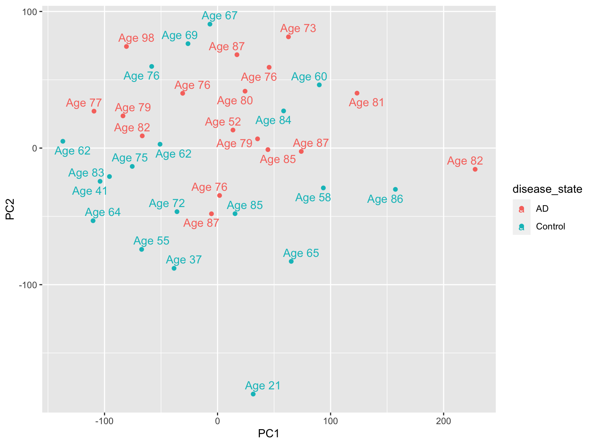
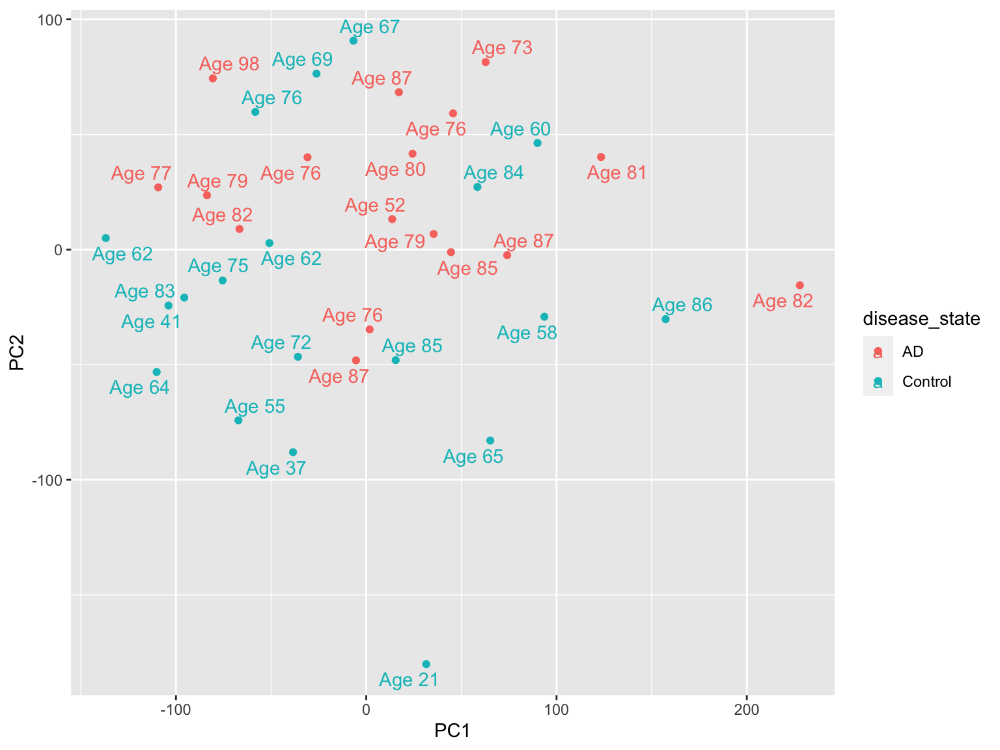
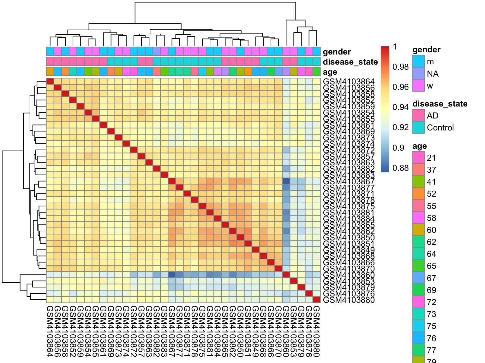
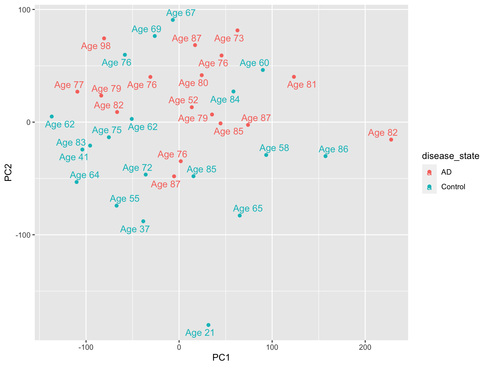
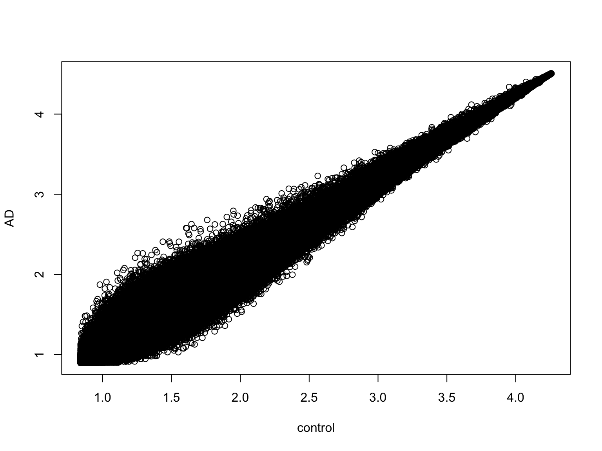

En este apartado lo que se va a intentar es explicar qué datos se han usado en el estudio y cuál ha sido el motivo de usar esos datos. También se mostrará algo de código y se verá un primer análisis exploratorio de los datos.
Esta parte creo que no ha sido la más acertada por mi parte debido a mi poca experiencia todavía en el mundo de la bioinformática. Entonces en un principio entontré dos posibles fuentes de datos:
(GSE138214)[https://www.ncbi.nlm.nih.gov/geo/query/acc.cgi?acc=GSE138214]
(GSE138261)[https://www.ncbi.nlm.nih.gov/geo/query/acc.cgi]
¿Por qué elegí estos dos estudios?Porque son estudios que contienen arrays de Affymetrix de la expresión del genoma humano. El problema fue que ambos tenían datos mezclados, es decir que algunas de las muestras eran las mismas. En un primer momento se intentó combinar ambos experimentos, pero aquí surgió el siguiente problema y es ¿cómo puedo combinar muestras de diferentes plataformas? Después de investigar cómo lo podía hacer, ví que había un montón de problemas luego en los análisis de expresión diferencial (objetivo del trabjo), así que finalmente y lamentando tener que acotar el scope del trabajo se optó por usar GSE138261 con las muestras de la primera plataforma.
Características de la matriz de expresión con la que se realizará el estudio:
| Control | 19 |
| AD | 17 |
| man | 16 |
| woman | 19 |
| NA | 1 |
En este apartado lo que se va hacer es intentar generar algún tipo de gráfico para poder poder ver algún tipo de patrón (si fuera posible).
id_gse <- "GSE138261"
gse138261_raw <- getGEO(id_gse)[[1]]
length(gse138261_raw)Una vez que ya hemos extraído de GEO los archivos del “Expression Set”, lo que vemos es que los valores de expresión son altos. Para poder trabajar mejor se aplica el logaritmo base 2 y representamos el resultado con un .
exprs(gse138261_raw) <- log2(exprs(gse138261_raw))
boxplot(exprs(gse138261_raw), outline = FALSE)
Ahora vamos a ver un mapa de calor, en el que se ve la interacción entre las distintas muestras, contra más cercanas a 0, el valor es menos representativo, es decir, esas muestras tienen menos que ver.
library(dplyr)
sampleInfo <- pData(gse138261_raw)
sampleInfo <- dplyr::select(sampleInfo, "age:ch1",
"disease state:ch1", "gender:ch1")
sampleInfo <- dplyr::rename(sampleInfo, age = "age:ch1",
disease_state = "disease state:ch1",
gender = "gender:ch1")
corMatrix <- cor(exprs(gse138261_raw), use = "c")
pheatmap(corMatrix)
El mismo mapa de calor pero con más información también de las variables de edad, género y viendo cuáles pertenecen a Alzheimer (AD) y al control.
rownames(sampleInfo) <- colnames(corMatrix)
pheatmap(corMatrix, annotation_col = sampleInfo)
El último gráfico ha sido un poco de investigación propio y ver cómo se puede hacer, se calcula pca (principal components analysis) y se van a agrupar viendo cómo de separadas están los AD de los control y también de cada muestra se ve la edad del paciente.
library(ggplot2)
pca <- prcomp(t(exprs(gse138261_raw)))
cbind(sampleInfo, pca$x) %>%
ggplot(aes(x = PC1, y = PC2, col = disease_state,
label = paste("Age", age))) + geom_point() +
geom_text_repel()
Normalizamos los datos entre arrays, normalmente esto se suele hacer con la descarga de los archivos .CEL, pero este método también permite hacer en el array de expresión directamente.
gse138261 <- gse138261_raw
exprs(gse138261) = normalizeBetweenArrays(exprs(gse138261_raw))library(ggplot2)
probenames = rownames(gse138261)
length(colnames(gse138261))## [1] 36sampleId <- c("AD_1", "AD_2", "AD_3", "AD_4",
"AD_5", "AD_6", "AD_7", "AD_8", "AD_9",
"AD_10", "AD_11", "AD_12", "AD_13", "AD_14",
"AD_15", "AD_16", "AD_17", "control_1",
"control_2", "control_3", "control_4",
"control_5", "control_6", "control_7",
"control_8", "control_9", "control_10",
"control_11", "control_12", "control_13",
"control_14", "control_15", "control_16",
"control_17", "control_18", "control_19")
colnames(gse138261) <- sampleId
## Calculamos los valores medios de
## expresión para cada
## genotipo/condición sumando las
## correspondientes columnas y
## dividiendo por el número de réplicas
expression.level = exprs(gse138261)
control = (expression.level[, "control_1"] +
expression.level[, "control_2"] + expression.level[,
"control_3"] + expression.level[, "control_4"] +
expression.level[, "control_5"] + expression.level[,
"control_6"] + expression.level[, "control_7"] +
expression.level[, "control_8"] + expression.level[,
"control_9"] + expression.level[, "control_10"] +
expression.level[, "control_11"] + expression.level[,
"control_12"] + expression.level[, "control_13"] +
expression.level[, "control_14"] + expression.level[,
"control_15"] + expression.level[, "control_16"] +
expression.level[, "control_17"] + expression.level[,
"control_18"] + expression.level[, "control_19"])/19
AD = (expression.level[, "AD_1"] + expression.level[,
"AD_1"] + expression.level[, "AD_2"] +
expression.level[, "AD_3"] + expression.level[,
"AD_4"] + expression.level[, "AD_5"] +
expression.level[, "AD_6"] + expression.level[,
"AD_7"] + expression.level[, "AD_8"] +
expression.level[, "AD_9"] + expression.level[,
"AD_10"] + expression.level[, "AD_11"] +
expression.level[, "AD_12"] + expression.level[,
"AD_13"] + expression.level[, "AD_14"] +
expression.level[, "AD_15"] + expression.level[,
"AD_16"] + expression.level[, "AD_17"])/17
## Creamos una matriz que contenga por
## columna la expresión media para cada
## condición o genotipo. Nombramos las
## filas con el nombre de las sondas
## (genes) y la columnas con la
## condición o genotipo.
mean.expression <- matrix(c(control, AD),
ncol = 2)
conditions.id <- c("control", "AD")
rownames(mean.expression) <- names(control)
colnames(mean.expression) <- conditions.id
## Scatterplots o gráficos de
## dispersión para la comparción de
## distintos genotipos/condiciones.
## Este tipo de gráficos nos permite
## obtener una visión global de la
## comparación entre
## genotipos/condiciones.
plot(control, AD, xlab = "control", ylab = "AD")
Uno de los paquetes principales de expresión diferencial es limma, que además de verlo en esta asignatura también se usó el cuatrimestre pasado en la asignatura de Bioinformática estadística. Para poder hacer este análisi hay que crear un model.matrixque es una matriz con el diseño del modelo, es decir, dependiendo de las variables que se quieran tener en cuenta, por cada muestra se pone 0 que significa que la fila (muestra) pertenece al grupo/variable (columna).
En nuestro caso se elaborará un model.matrix con casos(AD) y controles para luego aplicar el análisis diferencial.
library(limma)
# Generamos el model.matrix (control vs
# AD)
design <- model.matrix(~0 + sampleInfo$disease_state)
design## sampleInfo$disease_stateAD sampleInfo$disease_stateControl
## 1 1 0
## 2 1 0
## 3 1 0
## 4 1 0
## 5 1 0
## 6 1 0
## 7 1 0
## 8 1 0
## 9 1 0
## 10 1 0
## 11 1 0
## 12 1 0
## 13 1 0
## 14 1 0
## 15 1 0
## 16 1 0
## 17 1 0
## 18 0 1
## 19 0 1
## 20 0 1
## 21 0 1
## 22 0 1
## 23 0 1
## 24 0 1
## 25 0 1
## 26 0 1
## 27 0 1
## 28 0 1
## 29 0 1
## 30 0 1
## 31 0 1
## 32 0 1
## 33 0 1
## 34 0 1
## 35 0 1
## 36 0 1
## attr(,"assign")
## [1] 1 1
## attr(,"contrasts")
## attr(,"contrasts")$`sampleInfo$disease_state`
## [1] "contr.treatment"# Cambiamos el nombre de columnas
colnames(design) <- c("AD", "Control")Ahora vamos a calcular el nivel medio de expresión de todo el expression set. Con eso veremos que genes están expresados y también eliminaremos aquellos que aparecen en menos de dos muestras. Con ese subconjunto es con el que trabajaremos los contrastes.
## Nivel medio de expresión
cutoff <- median(exprs(gse138261))
## Miramos si está por encima o por
## debajo del nivel medio de expresión
is_expressed <- exprs(gse138261) > cutoff
## Nos quedamos con los genes que están
## en más de 2 muestras
keep <- rowSums(is_expressed) > 2
## En esta tabla se ve cuáles se van a
## eliminar
table(keep)## keep
## FALSE TRUE
## 388531 559141## Subconjunto de los elegidos
gse138261 <- gse138261[keep, ]
fit <- lmFit(exprs(gse138261), design)
head(fit$coefficients)## AD Control
## (+)E1A_r60_1 3.915223 3.911811
## (+)E1A_r60_3 2.543128 2.413052
## (+)E1A_r60_a135 2.403210 2.418003
## (+)E1A_r60_a20 2.740060 2.761894
## (+)E1A_r60_a22 3.141271 3.158320
## (+)E1A_r60_a97 3.454569 3.461472Lo que se quiere ver es qué genes están diferencialmente expresados en AD y control y para eso se hace el contraste, ajustamos por Bayes y mostramos los valores ordenados por log Fold Change.
# Especificamos un contraste
contrasts <- makeContrasts(AD - Control,
levels = design)
fit_1 <- contrasts.fit(fit, contrasts)
fit_1 <- eBayes(fit_1)
topTable(fit_1, coef = 1, sort.by = "logFC")## logFC AveExpr t P.Value adj.P.Val B
## ACUST_44910_PI426217869 0.8894111 1.674204 5.226946 7.694721e-06 4.501961e-04 3.633711
## ACUST_26653_PI426217860 0.8501948 2.046779 6.620371 1.088838e-07 3.137339e-05 7.697983
## ACUST_50190_PI426217852 0.8469658 1.635821 8.439068 5.096533e-10 1.909995e-06 12.793326
## A_33_P3373243 0.8461040 1.836742 7.315665 1.348018e-08 9.839842e-06 9.688364
## ACUST_76771_PI426217857 0.8379312 1.687080 6.329385 2.636986e-07 5.336708e-05 6.853865
## ACUST_309_PI426418820 0.8321372 1.498717 7.651135 4.997020e-09 5.869829e-06 10.631534
## ACUST_50336_PI426217857 0.8318256 1.999359 5.656864 2.063201e-06 1.916312e-04 4.889620
## ACUST_62323_PI426217852 0.8263700 2.001036 5.097544 1.142222e-05 5.809198e-04 3.257200
## ACUST_6732_PI426217863 0.8057775 1.763800 6.204816 3.856030e-07 6.784344e-05 6.491080
## ACUST_60783_PI426217857 0.7820543 1.853495 6.001291 7.183581e-07 9.996208e-05 5.897010Vamos a usar la función decideTests que lo que hace a partir del contraste hecho y los estadísticos obtenido, es decir, 1, expresados, 0 significa que es despreciable y -1 que no se debería tener en cuenta. Porque los valores de ouput vienen a decir: -1 -> significativamente negativo, 0 -> no significativo y 1 -> significativo.
En nuestro estudio tiene sentido los que son significativos pero quizá haya estudio cuáles sean los genes que tienen una significancia negativa porque quizá pueda tener un significado biológico.
table(decideTests(fit_1))##
## -1 0 1
## 31300 455071 72770# Número de genes que están por debajo
# de 1E-5 el p-valor
length(fit_1[fit_1$p.value < 1e-05, ]$p.value)## [1] 10531A modo de comparar también se ha evaluado el peso de cada una de las muestras, por si pudiera tener relevancia. Los resultados da un número más alto de significativos, así que nos quedaremos con el ajuste de arriba.
## Valores atípicos arrayWeights asigna
## una puntuación a cada muestra. 1
## mismo peso, < 1 a la baja y > 1 por
## arriba
aw <- arrayWeights(exprs(gse138261), design)
fit <- lmFit(exprs(gse138261), design, weights = aw)
contrasts <- makeContrasts(AD - Control,
levels = design)
fit2 <- contrasts.fit(fit, contrasts)
fit2 <- eBayes(fit2)
table(decideTests(fit2))##
## -1 0 1
## 57411 403169 98561El expression set ya estaba anotado, así que después de quedarnos con los 9425 genes que tienen un p-valor menor, hemos seleccionado las siguientes columnas de identificadores:
ID
GENE_NAME
DESCRIPTION
GO_ID
ENSEMBL_ID
Lo que pasa es que no todos los genes están anotados, entonces se ha hecho un cribado de aquellos que tienen al menos GENE_SYMBOL. Con estos lo que se ha hecho es añadir el p-valor correspodiente.
# Se seleccionan los que tenga p-valor
# < 1E-5
select_fit <- fit_1[fit_1$p.value < 1e-05,
]$p.value
# Columnas de anotacion seleccionadas
final <- fData(eset)[rownames(select_fit),
c("ID", "GENE_NAME", "GENE_SYMBOL", "DESCRIPTION",
"GO_ID", "ENSEMBL_ID")]
datos <- final[final$GENE_SYMBOL != "", ]
# Extraemos p-valor
p_value <- select_fit[datos$ID, ]
datos$p_value <- p_value
# Ordenamos por p-valor
datos <- datos[order(datos$p_value), ]
dim(datos)## [1] 279 7